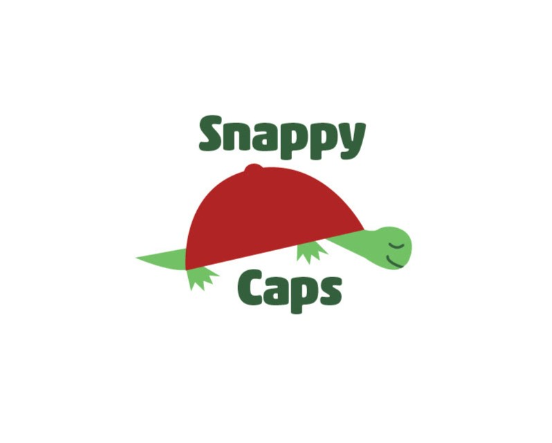
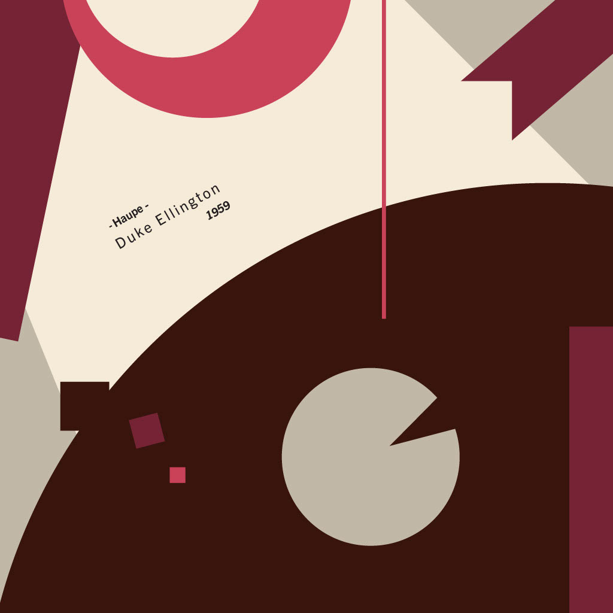
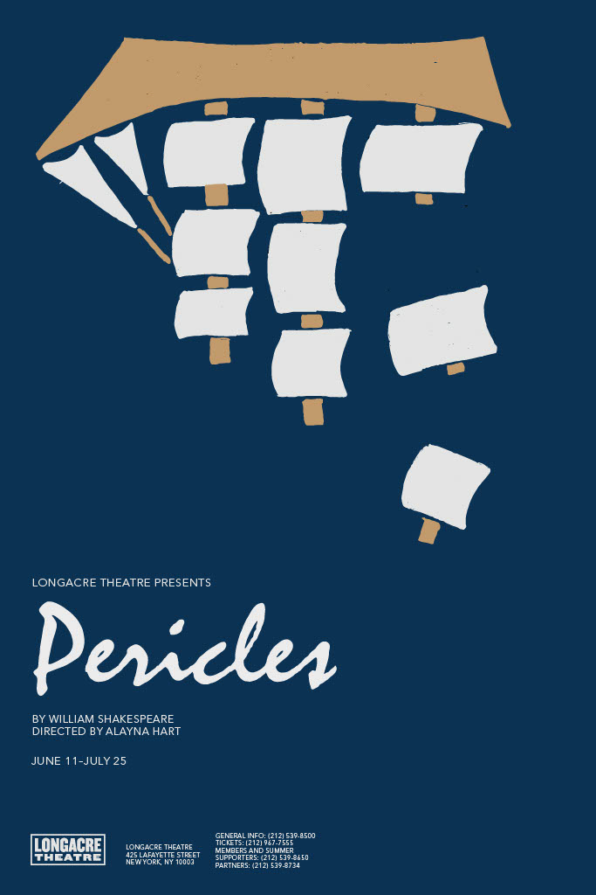
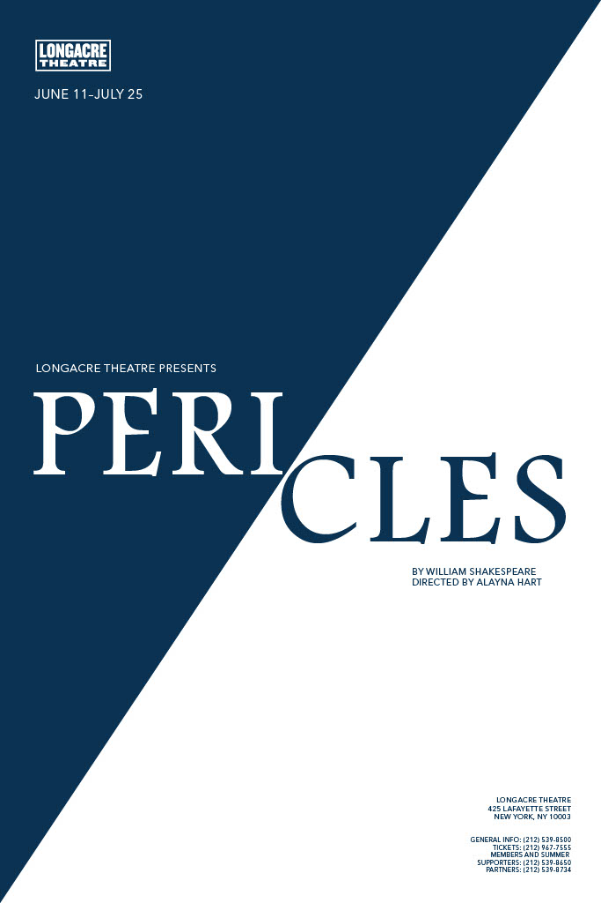
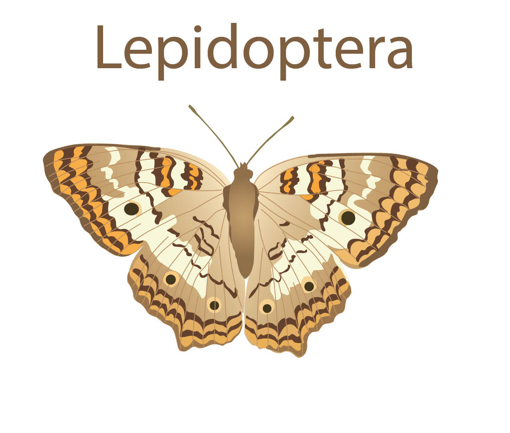
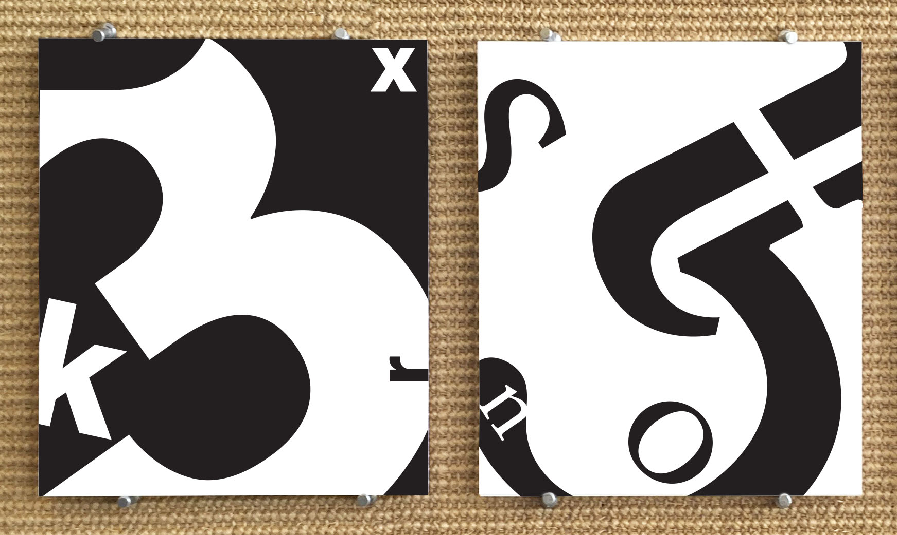

Graphic Design Projects
Logo Project
For this project, I created a unique logo for a fictional baseball cap company featuring a turtle mascot. The project guidelines required the use of a maximum of three colors and the incorporation of shapes, rather than strokes.

Album Project
This album cover was created for Haupe by Duke Ellington (1959) as part of an assignment to design a cover for an instrumental song produced before the 1960s. The project specifications allowed for only five colors and required the use of basic shapes (triangle, circle, rectangle, and line), along with the song title, artist's name, and year of release.

Poster Project
For this assignment, I designed two posters based on Shakespeare's Pericles. The task was to create a symbolic and typographic representation that captured the emotion and meaning of the play. Specific fonts, colors, and symbols attributed to the overall design of the posters.


Pin Project
In this project, I designed a pin and packaging centered around the theme "groovy." Using Adobe Illustrator to craft the design and Adobe Photoshop to enhance it, I applied shadows and highlights to give the pin a realistic, three-dimensional appearance. The project also involved simulating the product's packaging for a cohesive presentation.

Insect Project
For this project, I created a detailed illustration of a butterfly, drawing inspiration from a real Lepidoptera species. Using Adobe Photoshop, I recreated each element to ensure the accuracy of the insect's features, paying close attention to color, texture, and symmetry.

Glyph Project
This project involved creating two cohesive designs using glyphs from two different fonts: Neue Haas Grotesk Display Pro (sans-serif) and Stempel Garamond Lt Std (serif). The goal was to develop a design that visually expressed the unique characteristics and mood of each font style.

BYUI Campus Map
For this project, I designed a campus map for BYU-Idaho using Adobe InDesign, Illustrator, and Photoshop. The map features detailed guides, photographs of students, and descriptions of key buildings on campus. Overall layout and usability was kept in mind during the development process.
Click Here to View Project
Art Gallery Booklet
I created a mock art gallery booklet for a fictional exhibit featuring the works of Piet Mondrian. This project, designed in Adobe InDesign, Illustrator, and Photoshop, required the inclusion of eight pieces from Mondrian's collection and a description of the artist.
Click Here to View Project